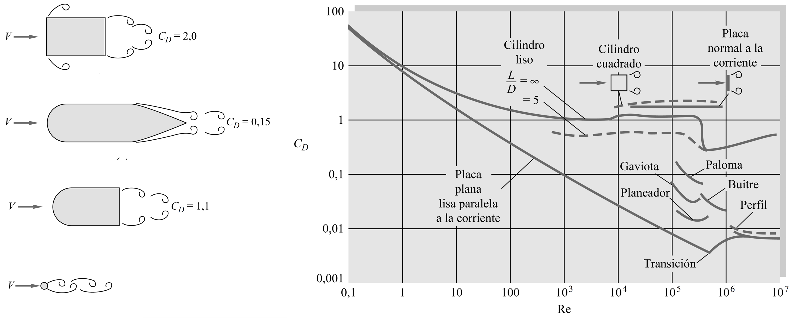

7. Flujo externo#
7.1. Introducción#
En este capítulo revisaremos el flujo alrededor de cuerpos que están inmersos en un fluido. Categorizamos este tipo de casos como Flujo externo.
{kind=link}
En el flujo externo estudiamos las fuerzas resultantes que ocurren en cuerpos producto de la presión y esfuerzo cortante en un cuerpo.

La fuerza resultante se descompone en:
Fuerza de arrastre (\(F_D\)) que corresponde a la componente en la dirección del flujo
Fuerza de sustentación (\(F_L\)) que corresponde a la componente perpendicular al flujo
La fuerza resultante se asocia al movimiento relativo entre el flujo y el cuerpo. Es decir, un cuerpo en reposo sometido a un flujo externo, o un cuerpo moviendose dentro de un fluido en reposo
En base a la figura anterior, ambas componentes se pueden expresar matemáticamente como:
Las ecuaciones permiten entender conceptualmente el efecto de la presión (\(P\)) y esfuerzo cortante (\(\tau_w\)) en el arrastre y sustentación.
Estas ecuaciones, sin embargo, tienen poca aplicación práctica debido a la dificultad de predecir la distribución de \(P\) y \(\tau_w\).
En la práctica se utilizan coeficientes adimencionales, los cuales representan los efectos de arrastre y sustentación de forma generalizada considerando una combinación de parámetros.
donde:
\(A\) es el área característica del cuerpo
\(\rho\) densidad del fluido
\(V\) velocidad del flujo
El área característica puede ser la sección transversal o paralela proyectada en la dirección del flujo, dependiendo del cuerpo y los efectos dominantes (presión o tensiones de corte). En el caso de embarcaciones marítima (como barcos o lanchas), se utiliza el área mojada.
7.2. Fuerzas de arrastre#
Como mencionamos anteriormente, el arrastre en cuerpos se debe a los efectos de presiones y tensiones de corte en la superficie de un cuerpo.
Así, podemos separar el coeficiente de arrastre en dos componentes:
donde:
\(C_{D,~\mathrm{fricción}}\) representa la componente del arrastre asociada a las tensiones de corte
\(C_{D,~\mathrm{presión}}\) representa la componente del arrastre asociada a diferencia de presiones
Para entender la contribución de cada componente es conveniente analizar el arrastre en una placa plana:
{kind=link}
El arrastre por fricción depende mayormente de la componente de las tensiones de corte paralela al flujo. Así, \(C_{D,~\mathrm{fricción}}\) será máximo si la placa está orientada en la dirección del flujo, y mínimo si está orientada perpendicular al flujo.
El arrastre por presión es proporcinoal a la diferencia de presiones entre la cara frontal y trasera del cuerpo sumergido. Por lo tanto, \(C_{D,~\mathrm{presión}}\) será mínimo si la placa está orientada en la dirección del flujo, y máximo si está orientada perpendicular al flujo.
Notar que en ambos casos (placa paralela o perpendicular) el área característica (\(A\)) corresponde a la superficie de la placa. Esto debido a que, para cada caso, los efectos de fricción y diferencia de presiones son dominantes en esa cara.
Para otros cuerpos de forma arbitraria, como el flujo alrededor del cilindro mostrado en la figura, el efecto de fricción y presiones actúa de forma conjunta. Estos cuerpos se denominan cuerpos romos
7.2.1. Flujo paralelo sobre una placa plana#
Como mencionabamos anteriormente, el arrastre en flujo paralelo sobre una placa plana se debe principalmente al efecto de la fricción resultante por los esfuerzos de corte.
Recordando las discusiones del capítulo 1, tenemos que las tensiones de corte se deben a la tasa de deformación del fluido:
Sin embargo, si miramos la figura anterior, notamos que \(du/dy = 0\). ¿Cómo se desarrolla el arrastre en una placa plana?
El efecto de tensiones de corte se debe a una pequeña capa viscosa en la superficie de la placa, denominada capa límite.
{kind=link}
El espesor de la capa límite \(\delta(x)\) define el límite que separa la región viscosa de la zona no viscosa. Como criterio \(\delta(x)\) se define como la distancia entre la superficie hasta el punto donde \(u = 0.99V\)
Notar, también, el desarrollo del flujo a medida que recorre la placa. Por un lado tenemos que el flujo pierde velocidad debido a la fricción (conservación de momento lineal). Esta pérdida de velocidad implica un crecimiento de la capa límite (conservación de masa). La pérdida de momento lineal, a su vez, induce inestabilidades en el flujo que se traducen en una transición de un régimen laminar a uno turbulento
Para establecer la región de transición utilizamos el siguiente criterio:
Matemáticamente, el espesor de capa límite está dado por:
Notar, sin embargo que la extención de las regiones laminar y turbulentas dependen de la velocidad del flujo
{kind=link}
El arrastre en este caso se debe, únicamente, a los efectos de fricción. Así, \(C_D = C_{D,~\mathrm{fricción}} = C_f \), donde \(C_f\) es el coeficiente de fricción dado por:
donde \(C_{f,x}\) es el coeficiente de fricción local:
Reemplazando las ecuaciones (6.6) en (6.5) y aplicando la ecuación (6.3), tenemos una relación para el coeficiente de fricción promedio:
A partir de las ecuaciones para \(C_{f,x}\), podemos calcular el esfuerzo de corte local en la pared del fluido como:
Notar que el coeficiente de fricción local es mayor en flujo turbulento. Esto ocurre debido a que la tasa de deformación en la pared es mayor.

Así, el esfuerzo de corte en la pared es mayor para un flujo turbulento.
Por último, notar que el hecho de que el coeficiente de arrastre en la placa disminuye cuando la velocidad del fluido aumenta no significa que la fuerza de arrastre disminuye con la velocidad.
Reemplazando la ecuación (6.7) en la expresión para \(C_D\) (6.1), tenemos que la fuerza de arrastre para el caso de una placa plana está dada, explícitamente por:
donde \(w\) es el ancho de la placa
Es decir, la fuerza de arrastre siempre aumenta con la velocidad.
Este fenómeno se repetirá en otros cuerpos que estudiaremos más adelante.
El efecto de la rugosidad es similar a lo discutido para flujo en tuberías (Diagrama de Moody).
{kind=link}
El comportamiento de las curvas dice relación con el espesor de la subcapa viscosa.
Cuando la rugosidad es menor que el espesor de la subcapa viscosa el efecto en la fricción es despresiable.
A medida que \(\mathrm{Re}_L\) aumenta, el espesor de la subcapa viscosa es menor y el efecto de la rugosidad comienza a tomar mayor relevancia.
Cuando la rugosidad es significativamente mayor, la fricción se vuelve independiente de \(\mathrm{Re}_L\)
7.2.2. Flujo sobre cuerpos romos#
En el caso de cuerpos romos, como cilindros o esferas, el efecto de gradiente de presión está presente en el desarrollo de la capa límite.
El efecto del gradiente de presión se puede entender analizando el flujo en una tobera convergente-divergente.
{kind=link}
Tal como indica la figura, cuando los gradientes de presión son favorables (\(\frac{dP}{dx} < 0\)) el espesor de la capa límite crece a una tasa menor que el observado en una placa plana. Sin embargo, cuando \(\frac{dP}{dx} > 0\) se produce una pérdida de momento lineal en la superficie del cuerpo que produce la separación de la capa límite.
El efecto es similar en cuerpos romos.
{kind=link}
El punto de separación de la capa límite cambia según el tipo de flujo
{kind=link}
Tal como indica la figura, pasado el punto de separación (región posterior) las presiones sobre el cuerpo caen.
Este efecto influye la contribución entre las fuerzas de fricción y diferencia de presiones.

Región 1. Para \(\mathrm{Re}\lesssim 1\) el coeficiente de arrastre disminuye con \(\mathrm{Re}\). No hay separación de la capa límite, y por lo tanto el arrastre se debe, únicamente, a efectos de fricción. Este régimen se conoce como Flujo de Stokes. En el caso de una esfera, \(C_\mathrm{D} = 24/\mathrm{Re}_D\).
Región 2. En el rango \(10 \lesssim \mathrm{Re} \lesssim 10^3\) la separación comienza a ocurrir. La región de separación aumenta con \(\mathrm{Re}\) y con esto el arrastre debido a las presiones.
Región 3. En el rango \(10^3 \lesssim \mathrm{Re} \lesssim 10^5\) la región de separación no aumenta y, como resultado, el valor de \(C_D\) permanece relativamente constante. El flujo sigue siendo laminar, pero el flujo en la región separada es sumamente turbulento.
Región 4. En el rango \(10^5 \lesssim \mathrm{Re} \lesssim 10^6\) se produce la transición a flujo turbulento. En este rango, la región de separación vuelve a disminuir, lo que se traduce en una caída en \(C_D\).
Región 5. Para \(10^6 \lesssim \mathrm{Re}\) el valor de \(C_\mathrm{D}\) aumenta hasta alcanzar su valor final de flujo turbulento.
El fenómeno de separación se presenta en todos los cuerpos, y define el comportamiento del coeficiente de arrastre.
{kind=link}
Notar que para una placa perpendicular al flujo, el coeficiente de arrastre es constante. Esto debido que la separación de la capa límite ocurre en la misma región, independiente de \(\mathrm{Re}\).
Podemos concluir que una forma de controlar el arrastre en cuerpos romos es reducir la región de separación. Esto se consigue mediante el fuselaje, es decir, reduciendo los bordes afilados en la cara frontal y suavizando la reducción de área de la parte posterior. El efecto del fuselaje en el arrastre se visualiza a la izquierda de la figura anterior.
Al fuselar los cuerpos el arrastre por diferencia de presiones disminuye. Sin embargo, el arrastre por fricción aumenta, ya que la superficie de contacto con el fluido es mayor.
Tal como indica la figura de abajo, la contribución de la resistencia por presiones y fricción cambia al fuselar un cuerpo. El ejemplo muestra la resistencia de un cuerpo aerodinámico cilíndrico muy largo en posición perpendicular a la dirección del flujo (\(\mathrm{Re} = 1\times 10^6\)). El largo del cilindro es \(c\) y el espesor \(t\).
{kind=link}
A la izquierda notamos que la contribución por fricción es máxima cuando \(t/c = 0\) (placa plana) y alrededor de 3% cuando \(t/c = 1\) (cilindro). A la derecha vemos el efecto combinado de ambos efectos, donde \(C_D\) alcanza un mínimo cuando la relación entre el espesor (\(t\)) y el largo (\(c\)) es approximadamente 0.2 (curva celeste).
La figura también muestra que \(C_D\) varía de forma diferente según se base en el área frontal (\(tb\)) o en el área de la forma en planta (\(cb\)). En el caso extremo de la placa plana (\(t/c\rightarrow 0\)), tenemos:
\(C_D \rightarrow 0\) cuando usamos el área de la forma en planta (\(cb\)), debido a que \(c\rightarrow \infty\).
\(C_D\rightarrow \infty\) cuando usamos el área frontal (\(tb\)), debido a que \(t\rightarrow 0\).
7.2.3. Efecto de la rugosidad en el arrastre#
La presencia de rugosidad en un cuerpo induce perturbaciones en el flujo, generando flujos turbulentos a menores números de Reynolds. Así, para un mismo valor de \(\mathrm{Re}\), la región de separación se reduce para el cuerpo rugoso, y como consecuencia el coeficiente de arrastre es menor.
{kind=link}
Para números de Reynolds altos (\(\mathrm{Re} \gtrsim 5\times 10^5\)) el coeficiente de arrastre de una esfera lisa es menor.
Con estas consideraciones las pelotas de golf (y otros deportes) se diseñan con una superficie rugosa que permita inducir turbulencia en los números de Reynolds típicos de operación (por ejemplo, \(V\sim 15 - 150~\mathrm{m/s}\) para pelotas de golf)
El siguiente video resume todo lo discutido sobre fuerzas de arrastre
7.3. Fuerza de sustentación#
El fenómeno de sustentación es un tópico complejo de explicar en términos simples debido a los múltiples efectos presentes.
Comenzamos definiendo la términología principal de un perfil alar.
{kind=link}
Para generar sustentación, lo principal es inducir una diferencia de presiones considerable entre las caras inferior y superior del perfil. El aporte de los efectos visosos, por otro lado, es despreciable.
Existen diversas teorías que explican parcialmente el efecto de sustentación. La más común es a través de la ecuación de Bernoulli. En este sentido, la diferencia de presiones se genera por la diferencia en las velocidades en la cara superior e inferior del cuerpo.
{kind=link}
En términos generales, cualquier cuerpo que genere una distribución de velocidades distinta en sus caras superior e inferior es capaz de generar sustentación, incluso una placa plana inclinada en dirección al flujo. La diferencia entre la placa plana y un cuerpo fuselado está en el arrastre, siendo menor en el caso de este último.
La clave para la sustentación, entonces, está en generar una velocidad de flujo mayor en la cara inferior. Así, si aumentamos el ángulo de ataque \(\alpha\), la sustentación también aumentará.
Este aumento, sin embargo, alcanza un límite cuando ocurre desprendimiento de la capa límite en la parte superior. En este punto, el arrastre aumenta significativamente, y el perfil pierde sustentación (también denominado stall).
{kind=link}
Una forma de aumentar la sustentación a bajos números de Reynols es mediante el uso de flaps. El principio de funcionamiento de estos elementos es similar a lo comentado anteriormente, es decir, aumentar la velocidad de flujo en la cara inferior del perfil
{kind=link}
El siguiente video explica en detalle el efecto de sustentación
7.4. Referencias#
Çengel Y. A. y Cimbala M. J. Mecánica de Fluidos: Fundamentos y Aplicaciones, 4ta Ed., McGraw Hill, 2018
Capitulo 11. Flujo externo: Arrastre y sustentación
White F. M. Mecánica de Fluidos, 5ta Ed., McGraw Hill, 2004
Capítulo 7. Flujo alrededor de cuerpos
Tec-science (2020, May 05). Flow separation (boundary layer separation) www.tec-science.com/mechanics/gases-and-liquids/flow-separation-boundary-layer-separation/